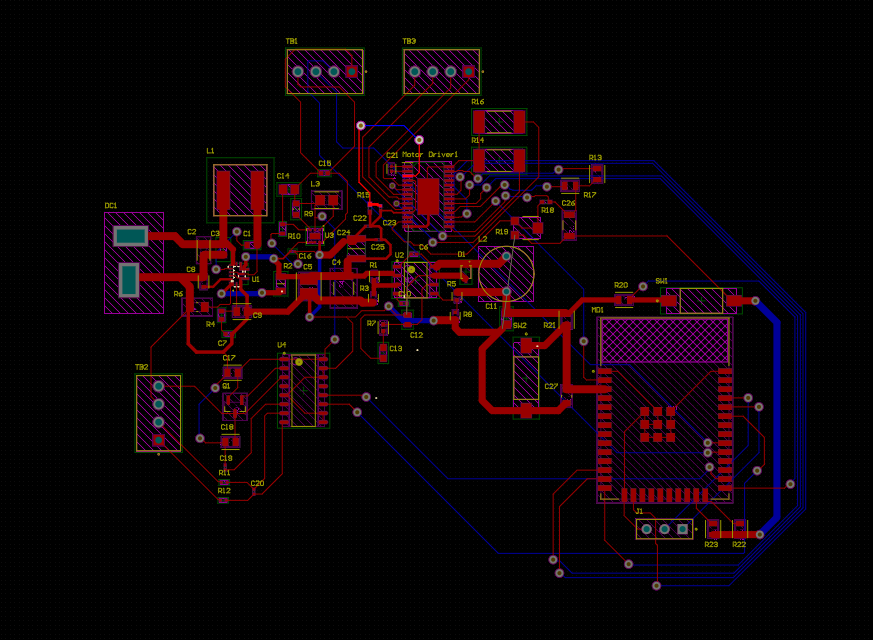
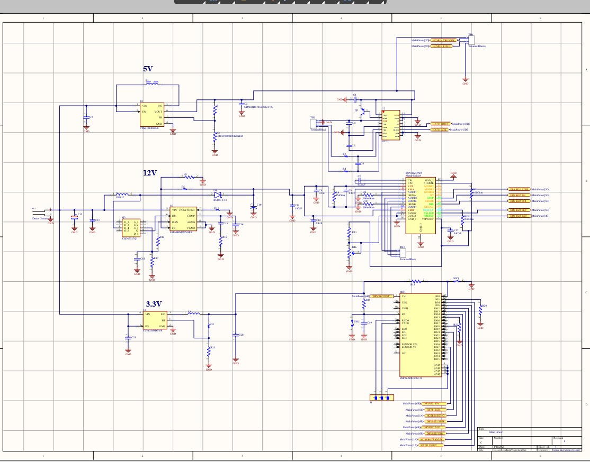
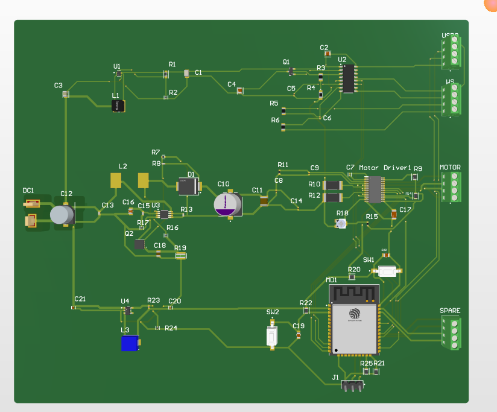
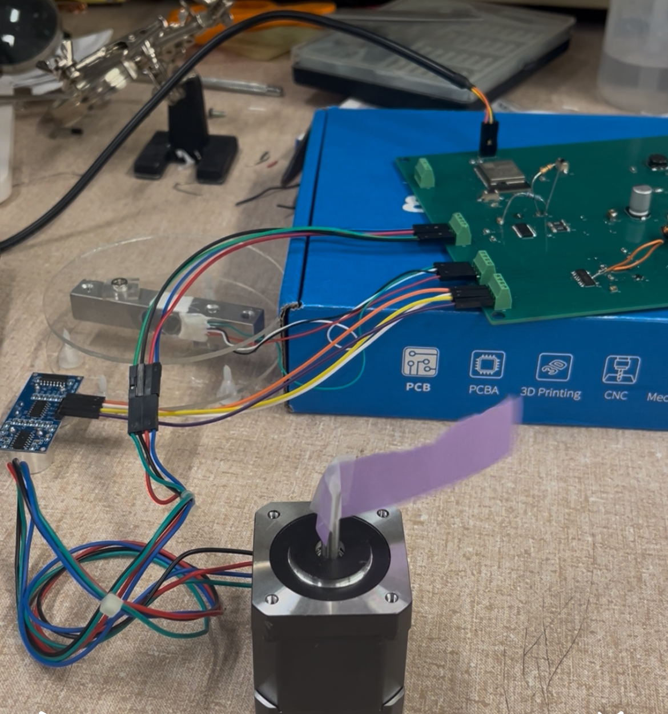
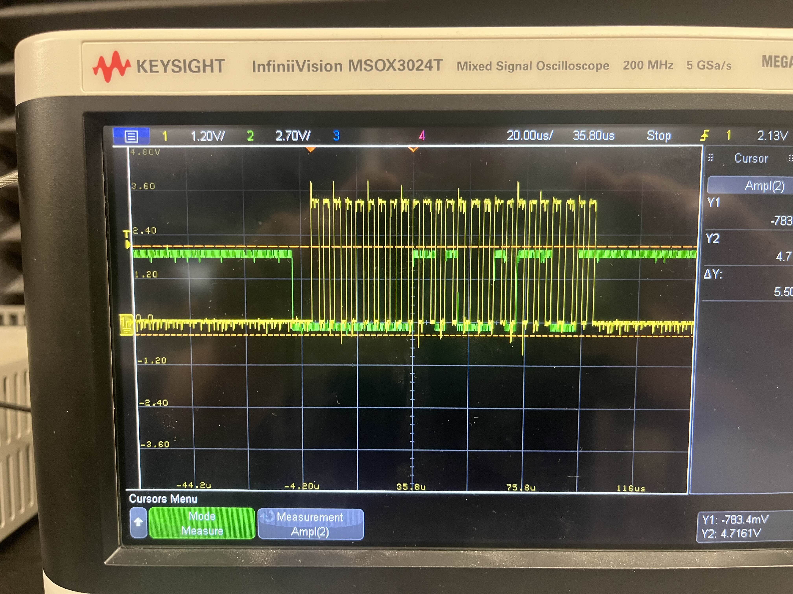

About Me
Howdy Yall! My name is Joshua dos Santos-Becker and I am currently a Graduate Student pursuing a Master's Degree in Electrical Engineering at Purdue University. I spend most of my free time watching Aggie football, exercising, playing League of Legends, Escape from Tarkov, and ocassionally Rust. I also enjoy coffee!
Projects
Automatic Pet Feeder
▶Semi-autonomous system designed to allow customer to feed their pet based on a schedule set through their mobile device. Designed to feed pets while on vacation or if away from home via wifi connection. This was my senior design capstone project.
This project had 3 electrical engineers working on it, so don't judge the mechanical structure too hard. I was incharge of creating a PCB that would power and control everything on the system. Another member designed the mobile application, and another member wrote the code for the ESP32 microcontroller and firebase database to handle communication. Due to the system requirement of having a battery charger and level checker I decided to create two separate PCBs. One to handle the battery charging and one to handle all of the main control and communication. Below you can see the render of the first pass at creating the controller pcb. This intial board had everything working except the 5V stage due to me accidentally ripping a pad off the board due to initial size constraints.
After much deliberation and discussion with teammates we decided to maximize the PCB size constraint at ~6inx7in size board that way we could design the rest of the project in time for showcase. I decided to space out components as far as possible and also separate different stages of the circuit in order to make assembly easier for me. I could look at labeled pads and instantly know which component belonged without much headache. It isnt the most cost efficient or professional solution but it greatly helped the debug process during soldering.
Below you can see the final render of the pcb.
Below you can see some of my initial testing/debugging for the peripherals of the system. This motor, scale(weight sensor), and ultrasonic distance sensor. If you're wondering why there are two resistors floating above the board that would be because I accidentally wired the traces of my potentiometer incorrectly to configure the I_max of the motor. I opted to just "hard code" the I_max current by using some clever combination of parallel resistances.
I could go on for great lengths about the problems I solved during this capstone project. However, in the interest of your time and mine I will only include technical solutions from this point on. Below you can see the clock and data digital signals leaving the ADC for the weight sensor. We were having troubles leveling the data signal that goes back to the ESP32 to be converted into a number. This was most likely caused by some logic voltage error. I.E the ESP32 needs a 3.3V signal on its GPIO ports to resolve a proper high signal. However the voltage leaving the ADC was slightly higher than 3.3V and kind of jittery. I did some research into Sigma-Delta ADC architecture but realized this was something "wrong" with the chip. I created a patchy solution by sinking some of the voltage via resistor. I was able to get data to properly read out of the ESP32 occansionally but it was nearly as consistent as we needed. Our solution to the requirement of weight based portions was based upon the average rate of food dispensed by the motor aka food per second.
Embedding youtube videos is confusing.
AutoCkt
Machine Learning Agent written in Python used to solve simple amplifier analog circuit parameters with basic feedback networks.
View on GitHub →io.io
2D resource collection game written in JS and HTML using the Phaser framework. (Currently unfinished.)
View on GitHub →Contact
Email: jdosbecker@gmail.com
GitHub: github.com/bowshua
LinkedIn: linkedin.com/in/joshua-dossantosbecker/